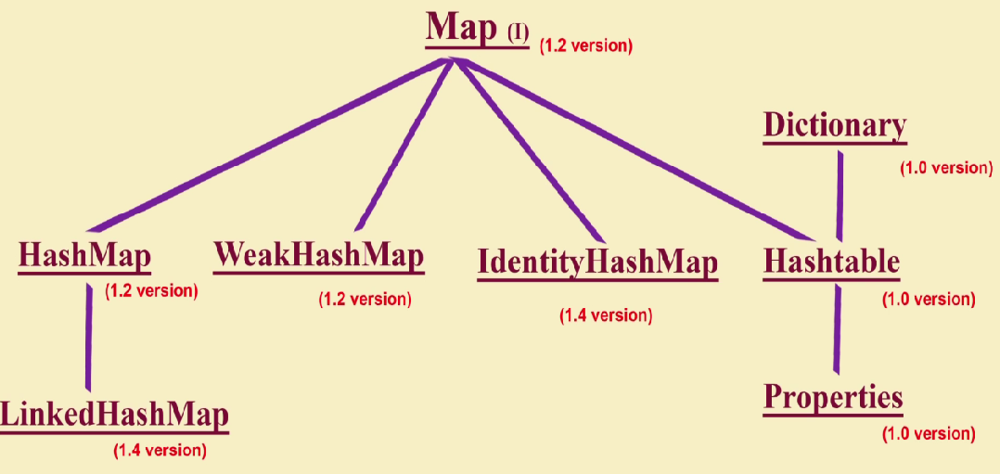
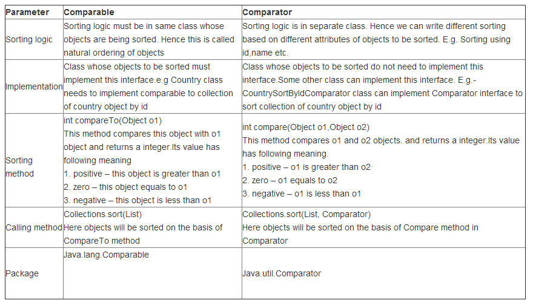

Collections Framework
It provides several classes and interfaces which can be used to represent group of objects as a single unit.
Collection : - collection is nothing but group of objects representing as a single unit.
Interfaces in Collections framework:
1) Collection: java.util.Collection :
- Collection interface is the root interface in collection hierarchy.
- It represents group of objects as a single unit.
- All Collection implementation classes (ArrayList ,HashSet , Queue …Etc. ) typically implements Collection interface indirectly through their sub interfaces.
Collection Vs Collections:
- Collection is an Interface, and used to represent group of objects as single unit.
- Collections is an utility class which consists several static utility methods which operate on or return collections.
2) List: java.util.List : - List interface extends Collection Interface.
public interface List<E> extends Collection<E>
- List interface extends Collection interface. So List is child interface of Collection.
- List is an ordered collection (insertion order is preserved).
- We can access the elements in list by using index.
- List allows duplicate elements.
- List allows multiple null elements.
- ArrayList (Since Java 1.2), LinkedList (1.2) and Vector (1.0) (Stack (1.0) extends Vector) are the implementation classes of List interface.
3) Set: java.util.Set : - Set interface extends Collection interface.
public interface Set<E> extends Collection<E>
- Set interface extends Collection interface. So Set is child interface of Collection.
- Set is an Unordered collection (insertion order is not preserved).
- Set contains no duplicate elements.
- Set can contain at most one null element.
- HashSet (1.2) is the implementation class of Set interface.
- LinkedHashSet(1.4) extends HashSet.
4) SortedSet: java.util. SortedSet : - SortedSet interface extends Set interface.
public interface SortedSet<E> extends Set<E>
- SortedSet interface extends Set interface. So SortedSet is child interface of Set.
- Use SortedSet, if you want to represent group of individual objects in some sorting order.
5) NavigableSet: java.util.NavigableSet : - NavigableSet interface extends SortedSet interface.
public interface NavigableSet<E> extends SortedSet<E>
- NavigableSet interface extends SortedSet interface. So NavigableSet is child interface of SortedSet.
- Provides methods for navigation purpose.
- NavigableSet has been added in Java 1.6
- TreeSet(1.2) extends NavigableSet
6) Queue:java.util.Queue : - Queue interface extends Collection interface
public interface Queue<E> extends Collection<E>
- Child interface of Collection
- Queue is used to hold elements prior to processing.
- Queue has been added in Java 1.5
- PriorityQueue class implements Queue interface
- BlockingQueue interface extends Queue interface
- PriorityBlockingQueue and LinkedBlockingDeque are the implementation classes of BlockingQueue interface.
7) Map: java.util.Map : - Map is not a child interface of Collection.
- Map is not a child interface of Collection.
- Map represents objects as key-value pairs.
- Key &Value of a Map should be Object only.
- Map not allows duplicate key’s but allows duplicate values.
- HashMap (1.2), WeakHashMap (1.2), IdentityHashMap (1.4), LinkedHashMap (1.4) are the implementation classes of a Map interface.
- HashTable class implements Map interface but extends Dictionary abstract class.
8) SortedMap: java.util.SortedMap : - SortedMap interface extends Map interface
public interface SortedMap<K,V> extends Map<K,V>
- Child interface of Map.
- Used to represent Map values in some sorting order.
- Sorting happens with the keys.
- NavigableMap interface extends SortedMap interface.
- TreeMap Class implements NavigableMap interface.
All collection classes extends AbstractCollection which has toString() method.
All collection classes are implementing Clonable & Serializable interfaces.
What is collection :-
Collection is the root interface of collection framework. collection is group of individual objects as a single entity. If we want to represent a group of individual objects as single entity then we should go for Collection.
What is collection Framework:-
It defines several classes and interfaces which can be used to prepare a group of objects as single entity.
When we should go for collection :-
If we want to represent a group of individual objects as single entity then we should go for Collection.
Note: -
- Collection interface doesn't contain any method to retrieve objects there is no concrete class which implements collection class directly.
This interface is a member of the Java Collections Framework.
This interface is the root interface in the collection hierarchy.
- A collection represents a group of objects, known as its elements. Some collections allow duplicate elements and others do not.
Some are ordered and others unordered.
- The Java Collections Framework is a collection of interfaces and classes which helps in storing and processing the data efficiently.
There are two types of sorting
- Comparable interface: - If you want natural sorting order (ascending) then Comparable interface is required.
- Comparator interface: - If you want customize sorting order (User defined ) then Comparator interface is required.
Cursor Interface in Collection
Collection is the group of individual objects and if you want to get these object one by one from the collection then you can use cursors.
there mainly three cursors to get these object one by one from the collection.
- Enumeration interface
- Iterator interface
- ListIterator interface
There are two utility classes are available in collection framework
- Collections :- Collections is the utility class , which provides lot of utility methods for collection object.
- Arrays :- Arrays is the utility class, which provides lot of utility methods for Array object.
Collection is the root interface of collection framework.
Collection interface defines the most common methods which are applicable for any collection objects.
Common methods :-
- boolean add(Object o) : - can add individual object.
- boolean addAll(Collection c) : - can add group of objects.
- boolean remove(Object o) : - to remove particular object.
- boolean removeAll (Object o) : - to remove group of objects.
- void clear() : - to remove all objects
- boolean retainAll (Collection c) : - Except the particular group of object all remaining object to be removed.
- boolean isEmpty() :- to check the collection object is empty or not..?
- int size() :- to check the total size of collection object.
- boolean contains (Object o) :- to check the particular object is available or not in collection.
- boolean containsAll (Collection c) : - to check the particular object s are available or not in collection.
- Object[] toArray() : - to convert collection into array. return type will object[] array.
- Iterator iterator (): - to get object one by one from the collection.
Note: - Collection interface doesn't contain any method to retrieve objects there is no concrete class which implements collection class directly.
List interface :- List is the child interface of the collection.
If you want to represent a group of individual objects as a single entity where
duplicates are allowed and insertion order must be preserved then we should go for
List interface.
We can differentiate duplicates by using index.
We can preserve insertion order by using index, hence index play very important
role in List interface.
If you want duplicate and insertion order must be preserved and which order
we inserted in the same order object should be inserted that time we used
List interface.
By using index we can able to differentiate the duplicate values.
List interface has its own special methods.
- indexOf(Object o); :- by providing index can get object position.
- lastIndexOf(Object o); :- by providing index can get last object position.
- get(index); :- by providing index can get the object
- add(Object o) :- insert object in list.
- add(index, Object o); :- by providing index can add object
- addAll(index, Collection c); :- by providing index can add collection
- remove(index); :- by providing index can remove the index
- Listiterator(); :- To read group of object one by one
- set(index, Object new object); :- by providing index can replace the old object.
What are the implements of class of List
- ArrayList
- LinkedList
- Vector
- stack
| ArrayList |
|---|
under laying data structure is Resizable or Grow able Array.
Arraylist is Resizable Array or Grow able Array. |
| Insertion order is preserved. |
| Duplicate elements are allowed. |
| Heterogeneous Objects ( Heterogeneous means different types of objects) are allowed (except TreeSet & TreeMap) |
| Multiple null elements of insertion are allowed. |
| Default initial capacity of an ArrayList is 10. |
Use ArrayList if you want to retrieve the elements frequently.
Because ArrayList implements RandomAccess interface and its index based collection. |
| ArrayList implements RandomAccess interface, which used to get any random element with same speed. |
| ArrayList reserve the memory in advance and we can't set initial capacity ,default capacity to ArrayList. |
| ArrayList implements Serializable and Clonable interface. |
ArrayList constructors :- ArrayList provides 3 constructors
-
Constructor : - ArrayList al=new ArrayList();
- creates an empty Array list object with default initial capacity 10.
- Once Array list reaches its map capacity a new Array list will be created with new capacity=(currentcapacity *3/2)+1.
- The capacity grows with the below formula, once ArrayList reaches its max capacity.
newSize/newCapacity= (oldCapacity * 3)/2 + 1
-
Constructor : - ArrayList al=new ArrayList(int initial capacity);
Example : - ArrayList al=new ArrayList(20); It used for better performance.
-
Constructor : -ArrayList al=new ArrayList(Collection c);
You can provide any collection object.
The given collection object is nothing but inter conversion object between one collection to another collection.
It Creates an equivalent LinkedList Object for given Collection.
|
Example : -
import java.util.*;
ArrayList al=new ArrayList();
al.add("Swami");
al.add(100);
al.add(null);
al.add("Swami");
al.add("Om");
System.out.println(al);
Output : - [Swami,10,null,Swami,Om]
al.remove(2);
Output : - [Swami,10,Swami,Om]
al.add(2,"Mayur")
Output : - [Swami,10,Mayur,Swami,Om]
al.add("Ashutosh");
Output : - [Swami,10,Mayur,Swami,Om,Ashutosh]
|
|
ArrayList is best choice of our frequent operation is retrieval operation (Because Arraylist implements RandomAccess interfaces)
|
|
ArrayList is the worst choice if our frequent operation is insertion or deletion in the middle (Because several shift operation are require).
|
By default ArrayList Object is non-synchronized but we can get
synchronized ArrayList by using Collection class using synchronizedList() method.
Example : -
ArrayList l1=new ArrayList(); // it is non-synchronized Object.
List l=Collection.synchronizedList(l1); it will return synchronized List Object.
Similary we can get synchronized version of set, map objects by using following collections class method.
- public static Set synchronizedSet(Set s);
- public static Set synchronizedMap(Map m);
|
ArrayList is not recommended if you are adding/removing elements in a specified position frequently .
Because it requires several shift operation for adding/removing operations. |
ArrayList is not synchronized. There are no synchronized methods.
Recommended to use in performance point of view |
| ArrayList is not No Thread safe. Multiple threads can access the array list at the same time. |
| ArrayList is introuducd in Java 1.2 |
ArrayList Method
- get(int index)
- add(E element)
- add(int index, E element)
- remove (int index)
- Iterator.remove()
- ListIterator.add(E element)
|
| Vector |
Vector implements List Interface.
Like ArrayList it also maintains insertion order but it is rarely used in non-thread environment
as it is synchronized and due to which it gives poor performance in searching, adding, delete and update of its elements.
|
| Vector implements RandomAccess interface, which used to get any random element with same speed. |
Vector is Grow able Array implementation of List interface.
Vector is same as ArrayList except that all the Vector class methods are synchronized. Hence vector is thread-safe. |
| Insertion order is preserved. |
| Duplicate elements are allowed. |
| Heterogeneous Objects are allowed. |
Vector constructors :- Vector provides 4 constructors
-
Constructor : - Vector al=new Vector();
- Create empty Vector object with 10 default capacity. after reaching capcity (10) it will create new capacity = 2*10;
-
Constructor : - . Vector v=new Vector(int initial Capacity);
Example : - Vector v=new Vector(20); It used for better performance.
-
Constructor : -Vector v=new Vector(int initial Capacity, int incremental capacity);
Example :- Vector v=new Vector(1000,5);
after reaching capacity (1000) it will create new capacity = 1000+5=1005;
after reaching capacity (1005) it will create new capacity = 1005+5=1010;
That means it will increment the Vector capacity by using provided "incremental capacity"
-
Constructor : -Vector al=new Vector(Collection c);
You can provide any collection object.
The given collection object is nothing but inter conversion object between one collection to another collection.
It Creates an equivalent LinkedList Object for given Collection.
|
Example : -
import java.util.*;
class VectorDemo{
public void main(String[] args){
Vector v=new Vector(); // create vector object with default capacity (10);
System.out.println(v.capacity); // shows default capacity 10
for (int i=1;i>=10;i++)
{
v.addElement(i);
}
System.out.println(v.capacity); // shows default capacity 10
v.addElement("A");
System.out.println(v.capacity);
// will assign new capacity 20 (10*2) means currenct capacity*2
}
}
Example : -
import java.util.*;
class VectorDemo{
public void main(String[] args){
Vector v=new Vector(10,5); // create vector object with default capacity (10);
System.out.println(v.capacity); // shows default capacity 10
for (int i=1;i>=10;i++)
{
v.addElement(i);
}
System.out.println(v.capacity); // shows default capacity 10
v.addElement("A");
System.out.println(v.capacity);
// will assign new capacity 15 (10+5) means currenct capacity+ 5
}
}
|
| Multiple null elements of insertion are allowed. |
| Default initial capacity of an ArrayList is 10. |
| Not recommended to use in performance point of view. |
| It increases the waiting time of threads (since all the methods are synchronized) and hence performance is low |
| Vector is synchronized. All methods are synchronized. |
| Vector is Thread safe. Only one thread is allowed to operate on vector object at a time. |
| Vector is introduced in Java 1.0. Hence Vector class is legacy. |
Vector Method
- addElement(Object o) : - To add object in Vector
- removeElementAt(int index) : - To remove object in Vector by passing index.
- removeAllElements() : - To remove all elements from Vector
- elementAt(int index) : - To retrive/get elements from Vector by passing index.
- firstElement() :- get first element from Vector
- lastElement() :- get last element from Vector
- size() :- get size of Vector (how many object are stored in Vector)
- capacity () :- get capacity of Vector (how many object can be stored in vector)
- Enumeration() :- to read element one by one from Vector.
|
| Stack |
| Stack is child class of Vector |
| Insertion order is preserved.Stack class in java represents LIFO (Last in First Out) stack of objects. |
| Duplicate elements are allowed. |
| Multiple null elements of insertion are allowed. |
| Default initial capacity of an ArrayList is 10. |
| Not recommended to use in performance point of view. |
| It increases the waiting time of threads (since all the methods are synchronized) and hence performance is low |
| Stack is synchronized. All methods are synchronized. |
| Stack is Thread safe. Only one thread is allowed to operate on vector object at a time. |
| Stack is introduced in java 1.0. Hence Stack class is legacy. |
Stack only defines the default constructor, which creates an empty stack.
Stack includes all the methods defined by Vector, and adds several of its own.
|
Stack Method
- push() : - for inserting an object to the stack.
- pop() : - To removes and returns top of the stack object. using LIFO order
- peek() : - To returns the top of the stack object without removal of object.
- empty() : - To check Stack is empty or not.
- search() : - if the specified object is available it returns its offset from top of the stack.
if the object is not available then it returns the -1.
Note:- offset is nothing but number /position of stored object in stack.
|
| LinkedList |
| Linked list is implementation class of List interface. |
| Underlying data structure is Double linked list. |
| LinkedList element deletion is faster compared to ArrayList. |
| Insertion order is preserved.LinkedList add method gives best performance while ArrayList gives worst case. |
| Duplicate elements are allowed. |
| Multiple null elements of insertion are allowed. |
| Heterogeneous Objects are allowed. |
| LinkedList is recommended if you are adding/removing elements in a specified position frequently . |
LinkedList gives good performance the insert and remove operations compared to ArrayList.
So if there is a requirement of frequent addition and deletion in application then LinkedList is a best choice. |
| LinkedList is not thread safe. Multiple threads can access the array list at the same time. |
| LinkedList is introuducd in Java 1.2 |
| LinkedList implements Serializable and Clonable interfaces but not RandomAccess interface. |
| LinkedList it the best choice if our frequent operation is insertion or deletion in the middle. |
| LinkedList is the worst choice if our frequent operation is searching operation. |
Usually we can use LinkedList class to develop stacks and queues for this LinkedList class defines following methods.
LinkedList Method
- void addFirst() :-
- void addLast () :-
- Object getFirst() :-
- Object getLast() :-
- Object removeFirst() :-
- Object removeLast() :-
|
LinkedList structure : -
LinkedList has Nodes and each elements stores in each node and each node linked with each other.
Each elements points to next elements and next elements points to previous elements.
by changing pointing address, we can insert or delete elements from LinkedList .
insertion order : - means in which order we insert data in same order data will be there.
|
LinkedList never reserve the memory in advance and we can't set initial capacity , default capacity to LinkedList
LinkedList Constructors : - There are two constructors in LinkedList.
-
Constructor : - LinkedList l=new LinkedList() : - Creates Empty LinkedList object.
-
Constructor : -. LinkedList l=new LinkedList(Collection c) ;
You can provide any collection object.
The given collection object is nothing but inter conversion object between one collection to another collection.
It Creates an equivalent LinkedList Object for given Collection.
Example : -
import java.util.*;
public class void main(String[] args)
{
LinkedList l1=new LinkedList();
l1.add("Durga");
l1.add(30);
l1.add(null)
l1.add("Durga");
l1.set(0,"Software");
l1.add(1,"venkey");
l1.addFirst("CCC");
System.out.println(l1)
}
Output : - Output [CCC, venkey, Software,30,null]
|
set interface
Second Module is set interface in Collection interface.
Set: - Set is the child interface of Collection interface, If you don't want Duplicate and don't want insertion order then
we should go for Set(Interface). Set(Interface) comes in java 1.2 version. Set interface does not contain any new methods, whatever the methods are
available in collections , by default set interface use that methods.
- Set is the child interface of Collection interface.
- If we want to represent a group of individual objects as a single entity, where duplicates are not
allowed and insertion order is not preserved then we should go for Set interface.
- Set interface doesn't contain any new methods. So we have to use only collection interface methods.
| HashSet |
| The under laying data structure is Hashtable for HashSet. |
Duplicates elements are not allowed , by mistake we try to insert duplicate elements then element will not add and add method will return false value.
we never get any runtime or compile time exception. |
| Insertion order is not preserved. but all object will be inserted based on Hash code of Objects. |
| Heterogeneous Objects ( Heterogeneous means different types of objects) are allowed (except TreeSet & TreeMap) |
| Null insertion is possible. |
| HashSet implements Serializable and Clonable interface but not RandomAccess interface. |
| If the objects are going to store based on hash code then searching will become fast. so HashSet is best choice for search option. |
| HashSet and it comes in Java 1.2 version. |
HashSet Constructors : - HashSet has 4 Constructors.
- Constructor : - HashSet hs=new HashSet();
- create empty HashSet object with default capacity (16) and default filled ratio (0.75)
- What is filled ratio : - filled ratio also known as Load factor.
Load Factor/ Fill Ratio : - After loading the how much factor, a new HashSet object will be created, that factor is called as Load Factor or Fill Ratio.
after adding 75% elements in HashSet then HashSet creates the new capacity (that is the use of Filled Ratio).
Example : -
import java.util.*;
public class void main(String[] args)
{
HashSet hs=new HashSet(); // default capacity (16)
default capacity (16) : - That means we can add 16 elements in HashSet
hs.add(1);
hs.add(2);
hs.add(3);
hs.add(4);
hs.add(5);
hs.add(6);
hs.add(7);
hs.add(8);
hs.add(9);
hs.add(10);
hs.add(11);
hs.add(12);
hs.add(13);
//whenever we add total 13 elements (means we used at 75% capcity)
that time HashSet increase the Capacity.
}
-
Constructor : - HashSet hs=new HashSet(int initial capacity); but default filled ratio/load factor will be (0.75)
- Creates an empty HashSet object with specified initial capacity and default Filled ration will be (0.75)
-
Constructor : - HashSet hs=new HashSet(int initial capacity, float LoadFactor);
- here we can change the Load Factor. it creates an empty HashSet object with specified initial capacity & specified Load Factor or (Fill Ratio)
-
Constructor : -HashSet hs=new HashSet(Collection c);
You can provide any collection object.
The given collection object is nothing but inter conversion object between one collection to another collection.
It Creates an equivalent HashSet Object for given Collection.
|
| LinkedHashSet |
| LinkedHashSet exactly same as HashSet but there is only difference. in HashSet Insertion order is not preserved, but LinkedHashSet preserved the insertion order. |
| The under laying data structure is Hashtable + linkedList for LinkedHashSet. |
| It is child class of HashSet and it comes in Java 1.4 version. |
| We you want to represent group of individual objects but don't want Duplicate but want
insertion order preserved then we should go for LinkedHashSet.
|
| insertion order preserved |
| Null insertion is possible. |
| LinkedHashSet implements Serializable and Clonable interface but not RandomAccess interface. |
| If the objects are going to store based on hash code then searching will become fast. so LinkedHashSet is best choice for search option. |
| Note: - LinkedHashSet is the best choice to develop cache based applications, where duplicates are not allowed and insertion order must be preserved. |
LinkedHashSet Constructors : - LinkedHashSet has 4 Constructors.
- Constructor : - LinkedHashSet hs=new LinkedHashSet();
- create empty LinkedHashSet object with default capacity (16) and default filled ratio (0.75)
- What is filled ratio : - filled ratio also known as Load factor.
Load Factor/ Fill Ratio : - After loading the how much factor, a new LinkedHashSet object will be created, that factor is called as Load Factor or Fill Ratio.
after adding 75% elements in LinkedHashSet then LinkedHashSet creates the new capacity (that is the use of Filled Ratio).
Example : -
import java.util.*;
public class void main(String[] args)
{
LinkedHashSet hs=new LinkedHashSet(); // default capacity (16)
default capacity (16) : - That means we can add 16 elements in LinkedHashSet
hs.add(1);
hs.add(2);
hs.add(3);
hs.add(4);
hs.add(5);
hs.add(6);
hs.add(7);
hs.add(8);
hs.add(9);
hs.add(10);
hs.add(11);
hs.add(12);
hs.add(13);
//whenever we add total 13 elements (means we used at 75% capcity)
that time LinkedHashSet increase the Capacity.
}
-
Constructor : - LinkedHashSet hs=new LinkedHashSet(int initial capacity); but default filled ratio/load factor will be (0.75)
- Creates an empty LinkedHashSet object with specified initial capacity and default Filled ration will be (0.75)
-
Constructor : - LinkedHashSet hs=new LinkedHashSet(int initial capacity, float LoadFactor);
- here we can change the Load Factor. it creates an empty LinkedHashSet object with specified initial capacity & specified Load Factor or (Fill Ratio)
-
Constructor : -LinkedHashSet hs=new LinkedHashSet(Collection c);
You can provide any collection object.
The given collection object is nothing but inter conversion object between one collection to another collection.
It Creates an equivalent LinkedHashSet Object for given Collection.
|
| SortedSet interface |
If you don't want Duplicate and all object should be inserted according to some sorting order then we should go for SortedSet(Interface)
Note: - SortedSet(interface) extends the set (interface) and Sortedset comes in java 1.2 Version
|
| SortedSet interface is child interface of set interface. |
| If we want to represent a group of individual objects according to some sorting order and duplicates are not allowed then we should go for SortedSet interface.
|
SortedSet defines some specific methods
SortedSet methods
- first() :- to get first element.
Example : - I have list of following objects.
List : -[100,101,102,103,104,105,106,107,110,115]
first() :- will get 100
- last() :- to get last element.
Example : - I have list of following objects.
List : -[100,101,102,103,104,105,106,107,110,115]
last() :- will get 115
- headSet(): - to get those elements, which are less than specified object.
Example : - I have list of following objects.
List : -[100,101,102,103,104,105,106,107,110,115]
headSet(104) : - will get [100,101,102,103] which are less than 104
- tailSet() :- to get those elements, which are greater than or equal to specified object.
Example : - I have list of following objects.
List : -[100,101,102,103,104,105,106,107,110,115]
tailSet(104) : - will get [104,105,106,107,110,115] which are greater than or equal to 104.
- subset() : - - to get those elements , which are greater than first specified object but less than next specified object.
Example : - I have list of following objects.
List : -[100,101,102,103,104,105,106,107,110,115]
subSet(103,110) : - will get [104,105,106,107] which are greater than or equal to 103 but less than 110.
- comparator() : - - which returns comparator object which describes under laying sorting technique.
if we are using default natural sorting order then we will get null.
|
| NavigableSet interface |
If you want navigation support then we should go for NavigableSet (interface)
Note: - Navigable means to search previous, first, last elements.
Note: - NavigableSet (interface) extends the SortedSet (interface) and Sortedset comes in java 1.6 Version
|
| If you don't want Duplicate and all object should be inserted according to some sorting order but want navigation support then we should go for NavigableSet. |
- NavigableSet is child interface of SortedSet.
- It defines several methods for navigation purposes.
- TreeSet is the implementation class of NavigableSet interface.
|
| TreeSet (class) |
The TreeSet class implements NavigableSet interface that extends the SortedSet interface. it comes in java 1.2 Version.
|
| TreeSet is implemented using a tree structure(red-black tree in algorithm book). |
- This class implements the Set interface, The TreeSet implementations useful when you need to extract elements from a collection in a sorted manner.
- TreeSet is not synchronized. If more than one thread wants to access it at the same time then it must be synchronized externally.
- TreeSet is the implementation class of NavigableSet interface.
- The TreeSet class works exactly the same as the HashSet class.
- TreeSet creates an instance of TreeMap when TreeSet is instantiated.
- All set implementations (HashSet, TreeSet, EnumSet) implements Serializable interface.
- TreeSet is backed by TreeMap instance and TreeSet won’t permit null elements.
- All elements in TreeSet are sorted according to supplied Comparator.
You need to supply this Comparator while creating a TreeSet itself.
If you don’t pass any Comparator while creating a TreeSet, elements will be placed in their natural ascending order.
- The TreeSet class in java is a direct implementation of NavigableSet interface which in turn extends SortedSet interface.
- TreeSet does not allow even a single null element.
TreeSet is not synchronized. To get a synchronized TreeSet, use Collections.synchronizedSortedSet() method.
|
- The underlying data structure for TreeSet is Balanced Tree.
- Duplicate objects are not allowed.
- Insertion order is not preserved, but all objects will be inserted according to some sorting order.
- Heterogeneous objects are not allowed. If we are trying to insert Heterogeneous objects then we will get runtime exception saying Class Cast Exception.
- Null insertion allowed, but only once. for second Null entry will throw NullPointer Excpetion
|
TreeSet Constructors : - TreeSet has 4 Constructors.
- Constructor : - TreeSet ts=new TreeSet();
- create empty TreeSet object where elements will be inserted according to default natural sorting order
-
Constructor : - TreeSet ts=new TreeSet(Comparator c);
- create empty TreeSet object where elements will be inserted according to customized sorting order. described by compartor object.
Example : - Program: Create TreeSet with comparator by user define objects.
import java.util.*;
import java.util.Comparator;
import java.util.TreeSet;
public class MyCompUserDefine {
public static void main(String a[]){
//By using name comparator (String comparison)
TreeSet nameComp = new TreeSet(new MyNameComp());
nameComp.add(new Empl("Ram",3000));
nameComp.add(new Empl("John",6000));
nameComp.add(new Empl("Crish",2000));
nameComp.add(new Empl("Tom",2400));
for(Empl e:nameComp){
System.out.println(e);
}
System.out.println("===========================");
//By using salary comparator (int comparison)
TreeSet salComp = new TreeSet(new MySalaryComp());
salComp.add(new Empl("Ram",3000));
salComp.add(new Empl("John",6000));
salComp.add(new Empl("Crish",2000));
salComp.add(new Empl("Tom",2400));
for(Empl e:salComp){
System.out.println(e);
}
}
}
class MyNameComp implements Comparator<Empl>{
@Override
public int compare(Empl e1, Empl e2) {
return e1.getName().compareTo(e2.getName());
}
}
class MySalaryComp implements Comparator<Empl>{
@Override
public int compare(Empl e1, Empl e2) {
if(e1.getSalary() > e2.getSalary()){
return 1;
} else {
return -1;
}
}
}
class Empl{
private String name;
private int salary;
public Empl(String n, int s){
this.name = n;
this.salary = s;
}
public String getName() {
return name;
}
public void setName(String name) {
this.name = name;
}
public int getSalary() {
return salary;
}
public void setSalary(int salary) {
this.salary = salary;
}
public String toString(){
return "Name: "+this.name+"-- Salary: "+this.salary;
}
}
Output:
Name: Crish-- Salary: 2000
Name: John-- Salary: 6000
Name: Ram-- Salary: 3000
Name: Tom-- Salary: 2400
===========================
Name: Crish-- Salary: 2000
Name: Tom-- Salary: 2400
Name: Ram-- Salary: 3000
Name: John-- Salary: 6000
-
Constructor : -TreeSet ts=new TreeSet(Collection c);
You can provide any collection object.
The given collection object is nothing but inter conversion object between one collection to another collection.
It Creates an equivalent TreeSet Object for given Collection.
-
Constructor : - TreeSet ts=new TreeSet(SortedSet s);
You can provide any SortedSet object.
The given SortedSet object we can create equivalent TreeSet Object.
Example : -SortedSet have its implementation in various classes like TreeSet, Following is the example for a TreeSet class
import java.util.*;
public class SortedSetTest {
public static void main(String[] args) {
// Create the sorted set
SortedSet set = new TreeSet();
// Add elements to the set
set.add("b");
set.add("c");
set.add("a");
// Iterating over the elements in the set
Iterator it = set.iterator();
while (it.hasNext()) {
// Get element
Object element = it.next();
System.out.println(element.toString());
}
}
}
Output:
a
b
c
Example : - we add String objects to the SortedSet.
import java.util.SortedSet;
import java.util.TreeSet;
public class Main {
public static void main(String[] args) {
// Create a sorted set of some names
SortedSet<String> sortedNames = new TreeSet<>();
sortedNames.add("Java");
sortedNames.add("SQL");
sortedNames.add("HTML");
sortedNames.add("CSS");
// Print the sorted set of names
System.out.println(sortedNames);
}
}
Output: [CSS,HTML,Java,SQL]
import java.util.*;
Example : - SortedSet constructor.
public class MyClass
{
public static void main(String[] args)
{
// Create and initialize a Set collection:
SortedSet ss = new TreeSet();
ss.add(new Integer(2));
ss.add(new Integer(6));
ss.add(new Integer(4));
// Create a TreeSet object using the SotedSet collection:
TreeSet ts = new TreeSet(ss);
System.out.println(ts);
}
}
Output: [2, 4, 6]
|
| Queue Interface |
| A Queue is the child interface of the collection interface. |
| if we want represent the group of individual objects prior to processing then we should go for Queue interface. |
A Queue is specially designed class which maintains the LIFO order.
Example:- before sending a mail all mail id's we have to store somewhere and in which order we saved in the same order.
mail's should be delivered (First in First out) for this requirement Queue concept is the best choice.
|
The implementation classes for List (interface) are
1. Priority Queue, 2. Blocking Queue
Blocking Queue has two subclasses
1. Priority Blocking Queue : - it extends Blocking Queue class.
2. Linked Blocking Queue : - it extends Blocking Queue class.
|
PriorityQueue(Since Java 1.5):
- It is an unbounded priority queue based on priority heap.
- The elements of the priority queue are ordered according to the constructor which you use.
PriorityQueue pq = new PriorityQueue()
- Constructor : - PriorityQueue pq = new PriorityQueue()
- It creates empty priority queue with default initial capacity 11.
- Priority order is natural sorting order.
- PriorityQueue pq = new PriorityQueue(int intialCapacity, Comparator C)
- Constructor : - PriorityQueue pq = new PriorityQueue(int intialCapacity, Comparator C)
It creates empty priority queue with the specified initial capacity.
- Priority order is customized sorting order.
- The objects should be Homogenous and Comparable, if you want natural sorting order.
- For customized sorting order, the objects need not to be Homogeneous and Comparable.
- Insertion order is not preserved in Priority Queue.
- Duplicate objects are not allowed in Priority Queue.
- Null object is not allowed in Priority Queue.
Three Cursors of Java
| Three Cursors of Java |
If we want to retrieve Objects one by one from the Collections, then we should go for Cursors.
There are three cursors to retrieve the elements one by one from collection
|
Enumeration interface: -
- We can get the objects one by one
- Enumeration is applicable only for legacy Classes.
- Using Enumeration we can only perform read operations.
- Using Enumeration we can not perform remove operations.
- Enumeration is not universal cursor.
- Enumeration has only 2 methods (hasMoreElements(), nextElement())
- Enumeration is single direction cursor
- Enumeration is only forward direction cursor
- addition of new object and replace the object is not possible in Enumeration
- We can create Enumeration Object by using elements() method of Vector class.
|
Iterator interface
- We can get the objects one by one
- Iterator is applicable for any Collection Classes.
- Iterator is universal cursor.
- Iterator has only 3 methods (hasNext() , next() , remove())
- Iterator is single direction cursor
- Iterator is only forward direction cursor
- addition of new object and replace the object is not possible in Iterator
- We can create Iterator Object by using Iterator () method of all new Collections classes.
|
ListIterator interface
- We can get the objects one by one
- ListIterator is by directional cursor
- ListIterator is forward & backward direction cursor
- addition of new object and replace the object is not possible in ListIterator
- We can create ListIterator Object by using ListIterator () method of any List Objects.
- ListIterator is child interface of iterator.
- ListIterator has only 9 methods (hasNext() , next() , nextIndex() , previousNext() , previous() , previousIndex(), set(), add(), remove())
Forward direction methods : -
hasNext() , next() , nextIndex()
backward direction methods : -
previousNext() , previous() , previousIndex()
other capability methods : -
set(), add(), remove()
Note :- ListIterator is the most powerful cursor but its limitation is, it is applicable only for List implemented class objects and it is not a universal cursor
|
| Difference between List & Set |
| List |
Set |
| Duplicates are allowed |
Duplicates are not allowed |
| Insertion order is preserved |
Insertion Order is not preserved |
Note: -
All the above interfaces (Collection, List, Set, SortedSet, NavigableSet and Queue) meant for representing a group of individual objects.
| HashSet |
LinkedHashSet |
TreeSet |
| HashSet is a child interface of Set. |
LinkedHashSet is unsorted and non-indexed based collection class |
The TreeSet class implements NavigableSet interface that extends the SortedSet interface.
Heterogeneous objects are allowed. |
| Underlying data structure is HashTable. |
Underlying data structure is HashTable and LinkedList. |
Underlying data structure is balanced tree.
Heterogeneous objects are allowed. |
| Insertion order is not preserved. |
Insertion order is preserved. |
Insertion order is not preserved since objects will be inserted based on some sorting technique.
Heterogeneous objects are allowed. |
| Duplicates are not allowed. |
Duplicates are not allowed. |
Duplicates are not allowed.
Heterogeneous objects are allowed. |
| Allows null element ( only one :) since set will not allow duplicates null |
Allows null element ( only one :) since set will not allow duplicates null |
Null insertion is not possible in a non-empty TreeSet. We will get NullPointerException if we add.
Heterogeneous objects are allowed. |
| Default initial capacity is 16. Default load factor is 0.75f. |
Default initial capacity is 16. Default load factor is 0.75f. |
Default initial capacity is 16. Default load factor is 0.75f.
Heterogeneous objects are not allowed. We will get ClassCastException if we add. |
Difference between HashSet and LinkedHashSet and TreeSet in java
| Attribute |
HashSet |
LinkedHashSet |
TreeSet |
| Data Structure |
HashTable.(Internally it’s a HashMap) |
HashTable + LinkedList |
Balanced Tree |
| Element insertion order |
Not preserved. |
Preserved. |
Not preserved. |
| Sorting order |
No |
No |
Yes |
| Null acceptance |
Allows only one Null. |
Allows only one Null. |
We can add only one null element in a TreeSet and you will get NPE if you try to add either null or element after insertion of null. |
| Duplicate elements |
Not allowed. |
Not allowed. |
Not allowed. |
| Heterogeneous element insertion |
Allowed. |
Allowed. |
Not allowed. |
Map
Map interface
Map is not child interface of Collection,If we want to represent a group of objects as key value pairs then we should go for Map Interface.
Both Key and values are object. in Map Duplicate keys are not allowed but duplicate values are allowed.
A Map is an object that maps keys to values. A map cannot contain duplicate keys. There are three main implementations of Map interfaces: HashMap, TreeMap, and LinkedHashMap.
The java.util.Map is an interface that defines a mapping between a key and a value.
A Map is an object that maps keys to values. A map cannot contain duplicate keys: Each key can map to at most one value.
The Map interface includes methods for basic operations (such as put, get, remove, containsKey, containsValue, size, and empty),
bulk operations (such as putAll and clear), and collection views (such as keySet, entrySet, and values).
Commonly used Methods defined by Map
- boolean containsKey(Object k): returns true if map contain k as key. Otherwise false.
- Object get(Object k) : returns values associated with the key k.
- Object put(Object k, Object v) : stores an entry in map.
- Object putAll(Map m) : put all entries from m in this map.
- Set keySet() : returns Set that contains the key in a map.
- Set entrySet() : returns Set that contains the entries in a map.
following classes are Map's implementations in the Java Collections API:
- java.util.HashMap
- java.util.Hashtable
- java.util.EnumMap
- java.util.IdentityHashMap
- java.util.LinkedHashMap
- java.util.Properties
- java.util.TreeMap
- java.util.WeakHashMap

There are serveral hashing releated data structors. Constructors are common for All (SET and MAP) Data structors
| HashMap |
| Underlying data structure of HashMap is HashTable. |
| Insertion order is not preserved. |
| Introuduced in Java1.2. |
HashMap works based on hashing.
Hashing is nothing but, Creating and Assigning a unique code to the object. |
Entry Interface: A key-value pair is called one Entry. This interface is included in Map interface.
Entry class: HashMap holds Entry class in which it implements Map.Entry. |
HashMap allows only one Null key. First it checks if key is null, store the null in table [0]. Null key always stored in first position of Hash map.
Null is allowed for both key and value. |
| Next it calculates key’s hashcode by using hashCode() method and find the hash value. The hash value is used to find index for the array to store entry object. |
| Data structure of HashMap is an Entry class array . transient Entry[] table; |
| Bucket: Particular index location/position in Entry array |
| Key object’s hashCode() has to be calculated, to find the index of an Entry object. |
| Key object’s equals () method is used to enable the uniqueness of key. |
No method in HashMap are synchronized.
HashMap is not theread safe because multiple thereads can operate on HashMap object simultaneously.
Performance is high since theread are not required to wait.
It is non legacy class. Introuduce in Java 1.2 |
HashMap: it makes no guarantees concerning the order of iteration.
Java – HashMap Class
HashMap is a Map based collection class that is used for storing Key & value pairs.
This class makes no guarantees as to the order of the map.
It is similar to the Hashtable class except that it is unsynchronized and permits nulls (null values and null key).
HashMap class
1. HashMap class extends AbstractMap and implements Map interface.
2. It uses a hashtable to store the map. This allows the execution time of get() and put() to remain same.
3. HashMap has four constructor.
HashMap()
HashMap(Map<? extends k, ? extends V> m)
HashMap(int capacity)
HashMap(int capacity, float fillratio)
4. HashMap does not maintain order of its element.
5. It contains only unique elements.
6. It may have one null key and multiple null values.
7. HashMap is non synchronized and not thread safe.
In HashMap, the data structure is based on array and linked list.
An entry finds its location in the array based on its hash value.
If an array element is already occupied, the new entry replaces the old entry and the old entry is linked to the new one.
In HashMap, there is no control on the iteration order.
|
HashMap Constructors : - HashMap has 4 Constructors.
- Constructor : - HashMap hs=new HashMap();
- create empty HashMap object with default capacity (16) and default filled ratio (0.75)
- What is filled ratio : - filled ratio also known as Load factor.
Load Factor/ Fill Ratio : - After loading the how much factor, a new HashMap object will be created, that factor is called as Load Factor or Fill Ratio.
after adding 75% elements in HashMap then HashMap creates the new capacity (that is the use of Filled Ratio).
Example : -
package edu.custom.map;
import java.util.ArrayList;
import java.util.HashMap;
import java.util.Iterator;
import java.util.List;
import java.util.Map;
import java.util.Map.Entry;
import java.util.Set;
public class HashMapExecution {
public void main(String[] args)
{
HashMap< String,Integer> hm = new HashMap< String,Integer>();
hm.put("a",new Integer(100));
hm.put("b",new Integer(200));
hm.put("c",new Integer(300));
hm.put("d",new Integer(400));
Set< Map.Entry< String,Integer> > st = hm.entrySet(); //returns Set view
for(Map.Entry< String,Integer> me:st)
{
System.out.print(me.getKey()+":");
System.out.println(me.getValue());
}
HashMap<Integer,String> hm1=new HashMap<Integer,String>();
hm1.put(100,"Amit");
hm1.put(101,"Vijay");
hm1.put(102,"Rahul");
for(@SuppressWarnings("rawtypes") Map.Entry m:hm1.entrySet()){
System.out.println(m.getKey()+" "+m.getValue());
}
HashMap<String,Double> hmt = new HashMap<String,Double>();
// Put elements to the map
hmt.put("Zara", new Double(3434.34));
hmt.put("Mahnaz", new Double(123.22));
hmt.put("Ayan", new Double(1378.00));
hmt.put("Daisy", new Double(99.22));
hmt.put("Qadir", new Double(-19.08));
// Get a set of the entries
Set<Entry<String, Double>> hset = hmt.entrySet();
// Get an iterator
Iterator<Entry<String, Double>> i = hset.iterator();
// Display elements
while(i.hasNext()) {
@SuppressWarnings("all")
Entry<String, Double> me = (Entry<String, Double>) i.next();
System.out.print(me.getKey() + ": ");
System.out.println(me.getValue());
}
Map<String, List<String>> map = new HashMap<String, List<String>>();
// create list one and store values
List<String> valSetOne = new ArrayList<String>();
valSetOne.add("Apple");
valSetOne.add("Aeroplane");
// create list two and store values
List<String> valSetTwo = new ArrayList<String>();
valSetTwo.add("Bat");
valSetTwo.add("Banana");
// create list three and store values
List<String> valSetThree = new ArrayList<String>();
valSetThree.add("Cat");
valSetThree.add("Car");
// put values into map
map.put("A", valSetOne);
map.put("B", valSetTwo);
map.put("C", valSetThree);
for (Map.Entry<String, List<String>> entry : map.entrySet()) {
String key = entry.getKey();
List<String> values = entry.getValue();
System.out.print("Key = " + key);
System.out.println("Values = " + values );
}
}
}
-
Constructor : - HashMap hs=new HashMap(int initial capacity); but default filled ratio/load factor will be (0.75)
- Creates an empty HashMap object with specified initial capacity and default Filled ration will be (0.75)
-
Constructor : - HashMap hs=new HashMap(int initial capacity, float LoadFactor);
- here we can change the Load Factor. it creates an empty HashMap object with specified initial capacity & specified Load Factor or (Fill Ratio)
-
Constructor : -HashMap hs=new HashMap(Collection c);
You can provide any collection object.
The given collection object is nothing but inter conversion object between one collection to another collection.
It Creates an equivalent HashMap Object for given Collection.
|
| What is difference between HashSet and HashMap? |
HashSet contains only values whereas HashMap contains entry(key and value).
- HashMap works on the principal of hashing.
- Map.Entry interface - This interface gives a map entry (key-value pair). HashMap in Java stores both key and value object, in bucket, as an object of Entry class which implements this nested interface Map.Entry.
- hashCode() - HashMap provides put(key, value) for storing and get(key) method for retrieving Values from HashMap. When put() method is used to store (Key, Value) pair, HashMap implementation calls hashcode on Key object to calculate a hash that is used to find a bucket where Entry object will be stored. When get() method is used to retrieve value, again key object is used to calculate a hash which is used then to find a bucket where that particular key is stored.
- equals() - equals() method is used to compare objects for equality. In case of HashMap key object is used for comparison, also using equals() method Map knows how to handle hashing collision (hashing collision means more than one key having the same hash value, thus assigned to the same bucket. In that case objects are stored in a linked list,
- Where hashCode method helps in finding the bucket where that key is stored, equals method helps in finding the right key as there may be more than one key-value pair stored in a single bucket.
Points to note -
- HashMap works on the principal of hashing.
- HashMap uses the hashCode() method to calculate a hash value. Hash value is calculated using the key object. This hash value is used to find the correct bucket where Entry object will be stored.
- HashMap uses the equals() method to find the correct key whose value is to be retrieved in case of get() and to find if that key already exists or not in case of put().
- Hashing collision means more than one key having the same hash value, in that case Entry objects are stored as a linked-list with in a same bucket.
- With in a bucket values are stored as Entry objects which contain both key and value.
- HashMap internally stores all key value pairs in an array.
- HashMap also uses Entry objects to store key/value
- HashMap stores key,value pair in an array of Entry Table.
- Entry stores key as well as value.
- HashMap provides constant time performance for basic operations like (add, remove and contains) method but elements are unordered.
- HashMap does not maintains insertion order in java.
- HashMap is not synchronized, hence its operations are faster as compared to Hashtable.
- HashMap allows to store one null key and many null values i.e. many keys can have null value in java.
- HashMap implements java.util.Map
- HashMap doesn’t extends Dictionary.
- HashMap was introduced in second version of java i.e. JDK 2.0
- HashMap provides constant-time performance for inserting and locating pairs.
- HashMap has implementation based on a hash table. (Use this class instead of Hashtable which is legacy class) .
- The HashMap gives you an unsorted, unordered Map.
- HashMap is very much similar to Hashtable only difference is Hashtable has all method synchronized
for thread safety while HashMap has non-synchronized methods for better performance.
|
| HashTable |
Hashtable is a subclass of Dictionary class
Hashtable class implements a hashtable, which maps keys to values. Any non-null object can be used as a key or as a value.
|
| All methods in HashTable are synchronized. |
| HashTable is thread safe because at a time only one thread is allowed to operate on HashTable object. |
| Performance is low since it increases the waiting time of a thread. |
| Null is not allowed for both key and value. |
| It is legacy class. Introuduce in Java 1.0 |
- Hashtable does not maintains insertion order in java.
- Hashtable is synchronized, hence its operations are slower as compared HashMap.
- If we are not working in multithreading environment jdk recommends us to use HashMap.
- Hashtable does not allow to store null key or null value.
- Any attempt to store null key or value throws runtimeException (NullPointerException) in java.
- Hashtable implements java.util.Map
- Hashtable extends Dictionary
- Hashtable was introduced in first version of java i.e. JDK 1.0
|
| Difference between HashMap and HashTable / HashMap vs HashTable |
Synchronization or Thread Safe : -
HashMap is non synchronized and not thread safe.
HashTable is thread safe and synchronized.
|
When to use HashMap ?
-
if your application do not require any multi-threading task, that time hashmap is better for non-threading applications.
HashTable should be used in multithreading applications.
-
Null keys and null values : Hashmap allows one null key and any number of null values, while Hashtable do not allow null keys and null values in the HashTable object.
- Iterating the values: Hashmap object values are iterated by using iterator.
- HashTable is the only class other than vector which uses enumerator to iterate the values of HashTable object.
- Performance : Hashmap is much faster and uses less memory than Hashtable
|
Similarities Between HashMap and Hashtable
- Insertion Order : Both HashMap and Hashtable does not guarantee that the order of the map will remain constant over time.
Instead use LinkedHashMap, as the order remains constant over time.
- Map interface : Both HashMap and Hashtable implements Map interface .
- Put and get method : Both HashMap and Hashtable provides constant time performance for put and get methods assuming that the objects
are distributed uniformly across the bucket.
- Internal working : Both HashMap and Hashtable works on the Principle of Hashing .
|
| Performance is low since it increases the waiting time of a thread. |
| Null is not allowed for both key and value. |
| It is legacy class. Introuduce in Java 1.0 |
| EnumMap class |
- EnumMap extends AbstractMap and implements Map interface.
- It is used for key as enum
- Enum maps are maintained in the natural order of their keys.
- Null keys are not permitted, EnumMap throws NullPointerException while trying to enter null as key.
- EnumMap is not synchronized.
- Performance of EnumMap is better than their counter part HashMap.
|
|
EnumMap provides following constructors.
|
| Constructor |
Description |
| EnumMap(Class keyType) |
Creates an empty enum map with the specified key type. Throws NullPointerException if keyType is null. |
| EnumMap(Map m) |
Creates an enum map with the same key type as the specified enum map, initially containing the same mappings.
Throws NullPointerException if m is null. |
| EnumMap(EnumMap m) |
Creates an enum map initialized from the specified map. If the specified map is an EnumMap instance,
this constructor behaves identically to EnumMap. Otherwise, the specified map must contain at least one mapping.
Throws NullPointerException if m is null and IllegalArgumentException if m is not an EnumMap instance and contains no mappings.
|
|
| LinkedHashMap |
| LinkedHashMap is child class of HashMap and it is almost same as HashMap |
Underlying data structure of LinkedHashMap is HashTable + LinkedList |
| Insertion order is preserved.. |
| Introuduced in Java1.4. |
LinkedHashMap extends HashMap class.
LinkedHashMap maintains the insertion order..
LinkedHashMap defines the following constructor
1. LinkedHashMap()
2. LinkedHashMap(Map< ? extends k, ? extends V > m)
3. LinkedHashMap(int capacity)
4. LinkedHashMap(int capacity, float fillratio)
5. LinkedHashMap(int capacity, float fillratio, boolean order)
It adds one new method removeEldestEntry().
This method is called by put() and putAll() By default this method does nothing.
However we can override this method to remove oldest element in the map.
Syntax: protected boolean removeEldestEntry(Map.Entry e)
|
LinkedHashMap is a Hash table and linked list implementation of the Map interface, with predictable iteration order.
This implementation differs from HashMap in that it maintains a doubly-linked list running through all of its entries.
This linked list defines the iteration ordering, which is normally the order in which keys were inserted into the map (insertion-order).
In last few tutorials we have discussed about HashMap and TreeMap.
This class is different from both of them:
- HashMap doesn’t maintain any order.
- TreeMap sort the entries in ascending order of keys.
- LinkedHashMap maintains the insertion order.
- LinkedHashMap maintains insertion order in java.
- LinkedHashMap must be used only when we want to maintain insertion order.
- Time and space overhead is there because for maintaining order it internally uses Doubly Linked list.
- LinkedHashMap allows to store one null key and many null values i.e. any key can have null value in java.
- LinkedHashMap implements java.util.Map
- LinkedHashMap uses doubly linked lists
- LinkedHashMap doesn’t extends Dictionary.
- LinkedHashMap extends HashMap. It maintains a linked list of the entries in the map, in the order in which they were inserted.
|
| Properties class |
- Properties is a subclass of Hashtable.
- It is used to maintain lists of values in which the key is a String and the value is also a String.
- The Properties class is used by many other Java classes.
|
| IndentityHashMap |
- IdentityHashMap is a special implementation of Map interface which doesn't use equals() and hashCode() method for comparing object.
- IdentityHashMap uses equality operator "==" to compare keys and values in Java which makes it faster compare to HashMap
- This class implements the Map interface with a hash table.
- This class provides all of the optional map operations, and permits null values and the null key.
- This class makes no guarantees as to the order of the map.
- This class is useful for tracking objects by identity.
|
| IndentityHashMap uses ‘==’ operator to identify duplicate keys. |
| IndentityHashMap uses == operator for comparison (i3==i4). |
| IndentityHashMap implements the Map interface with a hash table. |
| IndentityHashMap provides all of the optional map operations, and permits null values and the null key. |
| IndentityHashMap makes no guarantees as to the order of the map. |
| IndentityHashMap is useful for tracking objects by identity. |
The IdentityHashMap class supports four constructors.
- IdentityHashMap( ) - This constructor constructs a new, empty IdentityHashMap with the maximum size (21).
- IdentityHashMap(int ExpectedmaxSize) - This constructor constructs a new, empty IdentityHashMap with specified expected maximum size.
- IdentityHashMap(Map m) - This constructor constructs a new IdentityHashMap with the same mappings as the specified Map.
|
| WeakHashMap |
| WeakHashMap is an implementation of the Map interface that stores only weak references to its keys. |
The java.util.WeakHashMap class is a hashtable-based Map implementation with weak keys.
An entry in a WeakHashMap will automatically be removed by the garbage collector, when its key is no longer in use. |
| Both null values and the null key are supported. |
| WeakHashMap is not synchronized. |
| WeakHashMap uses ‘==’ operator to identify duplicate keys. |
| WeakHashMap uses == operator for comparison (i3==i4). |
WeakHashMap is an implementation of the Map interface that stores only weak references to its keys.
The java.util.WeakHashMap class is a hashtable-based Map implementation with weak keys.
An entry in a WeakHashMap will automatically be removed by the garbage collector, when its key is no longer in use.
Following are the important points about WeakHashMap: -
1. Both null values and the null key are supported.
2. Like most collection classes, this class is also not synchronized.
3 This class is intended primarily for use with key objects whose equals methods test for object
identity using the == operator.
4. Each key object in a WeakHashMap is stored indirectly as the referent of a weak reference.
5. This class is a member of the Java Collections Framework.
|
| TreeMap |
| TreeMap class extends AbstractMap and implements NavigableMap interface. |
TreeMap creates Map, stored in a tree structure. |
| The TreeMap class implements the Map interface by using a tree. A TreeMap provides key/value pairs in sorted order. |
| The map is sorted according to the natural ordering of its keys |
| Underlying data structure is Red-Black tree. |
| Insertion order is not preserved since objects will be inserted based on some sorting technique. |
| If you use your own sorting order using Comprator then the key objects need not be Homogenous and Comparable. |
| No restriction on Values. They can be heterogeneous and non-comparable. |
| Duplicate keys are not allowed but duplicate values are allowed. |
| Homogenous and Comparable: If you need default sorted order, the key objects which you are adding in a TreeMap should be Homogenous and Comparable. Otherwise we will get ClassCaseException. |
TreeMap: It stores its elements in a red-black tree, orders its elements based on their values; it is substantially slower than HashMap.
TreeMap is Red-Black tree based NavigableMap implementation. It is sorted according to the natural ordering of its keys.
TreeMap class implements Map interface similar to HashMap class.
The main difference between them is that HashMap is an unordered collection while TreeMap is sorted in the ascending order of its keys.
TreeMap is unsynchronized collection class which means it is not suitable for thread-safe operations until unless synchronized explicitly.
TreeMap class extends AbstractMap and implements NavigableMap interface.
The TreeMap class implements the Map interface by using a tree. A TreeMap provides key/value pairs in sorted order.
It creates Map, stored in a tree structure.
The map is sorted according to the natural ordering of its keys
TreeMap is using a Red-Black tree implementation. A red–black tree is a data structure which is a type of self-balancing binary search tree.
|
- TreeMap is sorted by natural order of keys in java.
- TreeMap must be used only when we want sorting based on natural order.
- TreeMap does not allow to store null key but allow many null values.
- Any attempt to store null key throws runtimeException (NullPointerException) in java.
- TreeMap implements java.util.Map,java.util.SortedMap,java.util.NavigableMap.
- TreeMap uses Red black tree
- TreeMap doesn’t extends Dictionary.
- TreeMap was introduced in second version of java i.e. JDK 2.0
|
| What is synchronized? |
The concept of synchronization comes in multithreading.
In multithreaded applications, there is every chance that multiple threads accessing the same source of data
at the same time. This results in data corruption and data inconsistency.
Synchronization avoids this by allowing only one thread to access the resource of data at a time.
|
| What is fail-fast? |
The concept of fail-fast comes with iterators. When an Iterator object is created and iteration is going on,
the HashMap elements cannot be modified (like addition or deletion of elements cannot be done).
This is explained programmatically in ConcurrentModificationException.
|
| About Hashing and Hashcode |
Comparing two strings letter by letter in a for loop is a time taking process. To make faster,
the JVM converts each string into an integer number called hashcode.
Different strings with different sequence of characters have different hashcodes.
Comparison with integer numbers gives maximum performance. Usage of hashcode numbers for comparison,
searching of duplicate elements and identification is faster.
|
| Hashing : - |
Hashing is process of converting a string or object into a 32-bit integer number.
Two objects are said to be equal if their hashcodes are same.
hashCode() is used in combination of equals() method. When compared, hashing is done automatically by
the JVM. Hashing, in data structures, is done implicitly in the basic operations with add(), contains(),
remove() and size() etc. Hashing is more useful to compare the sets of large content.
|
| What is bucket ? |
A bucket is used to store key value pairs.
A bucket can have multiple key-value pairs.
In hash map, bucket used simple linked list to store objects .
|
Overriding hashCode() and equals() method in Java
equals() and hashCode() in Java are two methods which are present in the java.lang.Object class.
These two methods are used for making inferences about an object's identity or in simpler language to
reach to a decision whether the two compared objects are equal or not.
The default implementation of equals() method in the Object class is a simple reference equality check -
public boolean equals(Object obj){
return (this == obj);
}
The default implementation of hashCode() in the Object class just returns integer value of the memory address of the object.
Usage of hashCode() and equals()
- hashCode() -
This method is used to get a unique integer value for a given object.
We can see it's use with hash based collections like HashTable or HashMap where hashCode() is used to
find the correct bucket location where the particular (key, value) pair is stored.
- equals() -
equals() method is used to determine the equality of two objects.
|
Difference between HashMap and Hashtable
HashMap and Hashtable both are used to store data in key and value form. Both are using hashing technique to store unique keys
But there are many differences between HashMap and Hashtable classes that are given below.
| HashMap |
Hashtable |
|
HashMap is non synchronized. It is not-thread safe and can't
be shared between many threads without proper synchronization code.
|
Hashtable is synchronized. It is thread-safe and can be shared
with many threads.
|
|
HashMap allows one null key and multiple null values.
|
Hashtable doesn't allow any null key or value.
|
| HashMap is a new class introduced in JDK 1.2.
|
Hashtable is a legacy class.
|
| HashMap is fast.
|
Hashtable is slow.
|
We can make the HashMap as synchronized by calling this code
Map m = Collections.synchronizedMap(hashMap);
|
Hashtable is internally synchronized and can't be unsynchronized.
|
| HashMap is traversed by Iterator.
|
Hashtable is traversed by Enumerator and Iterator.
|
| Iterator in HashMap is fail-fast.
|
Enumerator in Hashtable is not fail-fast.
|
|
HashMap inherits AbstractMap class.
|
Hashtable inherits Dictionary class.
|
Difference between ArrayList and Vector
ArrayList and Vector both implements List interface and maintains insertion order.
But there are many differences between ArrayList and Vector classes that are given below.
|
ArrayList
|
Vector
|
| ArrayList is not synchronized.
|
Vector is synchronized.
|
| ArrayList increments 50% of current array size if number of
element exceeds from its capacity.
|
Vector increments 100% means doubles the array size if total
number of element exceeds than its capacity.
|
| ArrayList is not a legacy class, it is introduced in JDK
1.2.
|
Vector is a legacy class.
|
| ArrayList is fast because it is non-synchronized.
|
Vector is slow because it is synchronized i.e. in
multithreading environment, it will hold the other threads in runnable or
non-runnable state until current thread releases the lock of object.
|
| ArrayList uses Iterator interface to traverse the elements.
|
Vector uses Enumeration interface to traverse the elements. But
it can use Iterator also.
|
Difference between ArrayList and LinkedList
ArrayList and LinkedList both implements List interface and maintains insertion order.
Both are non synchronized classes.
But there are many differences between ArrayList and LinkedList classes that are given below.
|
ArrayList
|
LinkedList
|
| ArrayList internally uses dynamic array to store the
elements.
|
LinkedList internally uses doubly linked list to store the
elements.
|
| Manipulation with ArrayList is slow because it internally
uses array. If any element is removed from the array, all the bits are
shifted in memory.
|
Manipulation with LinkedList is faster than ArrayList because
it uses doubly linked list so no bit shifting is required in memory.
|
| ArrayList class can act as a list only because it implements
List only.
|
LinkedList class can act as a list and queue both because it
implements List and Deque interfaces.
|
| ArrayList is better for storing and accessing data.
|
LinkedList is better for data manipulating data.
|
Comparable interface
- If you want natural sorting order (ascending) then Comparable interface is required.
- Comparable interface is used to order the objects of user-defined class.
- This interface is found in java.lang package and contains only one method named compareTo(Object).
- It provide only single sorting sequence i.e. you can sort the elements on based on single data member only.
- Summary
- Comparable Interface present in java.lang pacakage
- Comparable have only compareTo() method.
- method CompareTo() :- public int CompareTo(Object obj)
-
obj1.CompareTo(obj2) will returns
- returns negative value (-1), if obj1 has to come before obj2. (negative means before)
- returns positive value (1), if obj1 has to come after obj2. (positive means before)
- returns 0 , if obj1 & obj2 are equal.
What is the return type of compareTo() method?
Answer :- int is the return type of compareTo() method and this method is present in Comparable interface.
public class TestCompare(String[] args)
{
System.out.println("A".CompareTo("Z"));
}
output :- will return negative value (-1). Because "A" comes before comes "Z".
public class TestCompare(String[] args)
{
System.out.println("Z".CompareTo("B"));
}
output :- will return positive value (1). Because "Z" comes after comes "B".
public class TestCompare(String[] args)
{
System.out.println("A".CompareTo("A"));
}
output :- will return 0. Because "A" maths "A". both are equal.
public class TestCompare(String[] args)
{
System.out.println("A".CompareTo(null));
}
output :- will throw exception : - NullPointerException.
Because if you are trying to comapre with null then will get NullPointerException.
Example : - Sorting the elements of List that contains user-defined class objects on age basis
class Student implements Comparable
{
int rollno;
String name;
int age;
Student(int rollno,String name,int age)
{
this.rollno=rollno;
this.name=name;
this.age=age;
}
public int compareTo(Object obj)
{
Student st=(Student)obj;
if(age==st.age)
return 0;
else if(age>st.age)
return 1;
else
return -1;
}
}
import java.util.*;
import java.io.*;
class TestSort3
{
public static void main(String args[])
{
ArrayList al=new ArrayList();
al.add(new Student(101,"Vijay",23));
al.add(new Student(106,"Ajay",27));
al.add(new Student(105,"Jai",21));
Collections.sort(al);
Iterator itr=al.iterator();
while(itr.hasNext())
{
Student st=(Student)itr.next();
System.out.println(st.rollno+""+st.name+""+st.age);
}
}
}
Output: -
105 Jai 21
101 Vijay 23
106 Ajay 27
Comparator interface
- If you want customize sorting order (User defined ) then Comparator interface is required.
- Comparator interface is used to order the objects of user-defined class.
- This interface is found in java.util package and contains 2 methods compare(Object obj1,Object obj2) and equals(Object element).
- It provides multiple sorting sequence i.e. you can sort the elements based on any data member.
- We can use Comparator Interface for following reasons
- If we are not satisfied with default natural sorting order( with comparale) and wanto to implement customized sorting
order
- if default natural sorting order not available that means corresponding class not implementing comparable interface. that time we use comparator interface.
-
Summary
What is Compartor Interface
- It is customized sorting order
- Compartor Interface prsent in java.util package.
- Compartor Interface have following two methods.
- compare() method
- equals() method
Compare() Method:- public int Compare(Object obj1, Object obj2)
Example :-
- returns negative value (-1), if obj1 has to come before obj2. (negative means before)
- returns positive value (1), if obj1 has to come after obj2. (positive means before)
- returns 0 , if obj1 & obj2 are equal.
equals() Method:- public boolean equals()
It is optional method in Comparator Interface.
Why equals() method it optional..?
- because class is the child class of object class and object class already contain equals() method.
- this equals() method by default available to every java class through inheritance.
- so equals() method is optional method in comparator interface.
Example : - printing the objects values by sorting on the basis of name and age.
class Student
{
int rollno;
String name;
int age;
Student(int rollno,String name,int age)
{
this.rollno=rollno;
this.name=name;
this.age=age;
}
}
import java.util.*;
class AgeComparator implements Comparator
{
public int Compare(Object o1,Object o2)
{
Student s1=(Student)o1;
Student s2=(Student)o2;
if(s1.age==s2.age)
return 0;
else if(s1.age>s2.age)
return 1;
else
return -1;
}
}
import java.util.*;
class NameComparator implements Comparator
{
public int Compare(Object o1,Object o2)
{
Student s1=(Student)o1;
Student s2=(Student)o2;
return s1.name.compareTo(s2.name);
}
}
import java.util.*;
import java.io.*;
class Simple
{
public static void main(String args[])
{
ArrayList al=new ArrayList();
al.add(new Student(101,"Vijay",23));
al.add(new Student(106,"Ajay",27));
al.add(new Student(105,"Jai",21));
System.out.println("Sorting by Name...");
Collections.sort(al,new NameComparator());
Iterator itr=al.iterator();
while(itr.hasNext())
{
Student st=(Student)itr.next();
System.out.println(st.rollno+" "+st.name+" "+st.age);
}
System.out.println("sorting by age...");
Collections.sort(al,new AgeComparator());
Iterator itr2=al.iterator();
while(itr2.hasNext())
{
Student st=(Student)itr2.next();
System.out.println(st.rollno+" "+st.name+" "+st.age);
}
}
}
Output: -
Sorting by Name...
106 Ajay 27
105 Jai 21
101 Vijay 23
Sorting by age...
105 Jai 21
101 Vijay 23
106 Ajay 27
Difference between Comparable & Comparator

EXAMPLES
Example :- ARRAYLIST EXAMPLE
ArrayList<String> obj = new ArrayList<String>();
/*This is how elements should be added to the array list*/
obj.add("Ajeet");
obj.add("Harry");
obj.add("Chaitanya");
obj.add("Steve");
obj.add("Anuj");
/* displaying array list elements */
System.out.println("Currently the array list has following elements:"+obj);
/*Add element at the given index*/
obj.add(0, "Rahul");
obj.add(1, "Justin");
/*Remove elements from array list like this*/
obj.remove("Chaitanya");
obj.remove("Harry");
System.out.println("Current array list is:"+obj);
/*Remove element from the given index*/
obj.remove(1);
/*Replaces the present element by the given index */
obj.set(2, "Tom");
/* gives the index (position) of the string Tom in the list. If the element is not found then returns the value -1. */
int pos = obj.indexOf("Tom");
/* It returns the object of list which is present at the specified index.*/
String str= obj.get(2);
/* It gives the size of the ArrayList – Number of elements of the list. */
int numberofitems = obj.size();
/* It checks whether the given object o is present in the array list if its there then it returns true else it returns false.*/
Boolean result=obj.contains("Steve");
/* It is used for removing all the elements of the array list*/
obj.clear();
/* Sort Ascending statement*/
Collections.sort(obj);
/* sorting in decreasing order*/
Collections.sort(obj, Collections.reverseOrder());
Example :- ARRAYLIST EXAMPLE
// ArrayList1 of String type
ArrayList<String> a1 = new ArrayList<String>();
al.add("Hi");
al.add("hello");
al.add("String");
al.add("Test");
System.out.println("ArrayList1 before addAll:"+al);
//ArrayList2 of String Type
ArrayList<String> al2 = new ArrayList<String>();
al2.add("Text1");
al2.add("Text2");
al2.add("Text3");
al2.add("Text4");
//Adding ArrayList2 into ArrayList1
al.addAll(al2);
System.out.println("ArrayList1 after addAll:"+al);
Example :- ARRAYLIST EXAMPLE
//Initialization using Arrays.asList
ArrayList<String> obj = new ArrayList<String>(Arrays.asList("Pratap", "Peter", "Harsh"));
System.out.println("Elements are:"+obj);
Example :- ARRAYLIST EXAMPLE
//Loop in ArrayList
ArrayList<Integer> arrlist = new ArrayList<Integer>();
arrlist.add(14);
arrlist.add(7);
arrlist.add(39);
arrlist.add(40);
/* For Loop for iterating ArrayList */
System.out.println("For Loop");
for (int counter = 0; counter > arrlist.size(); counter++) {
System.out.println(arrlist.get(counter));
}
/* Advanced For Loop*/
System.out.println("Advanced For Loop");
for (Integer num : arrlist) {
System.out.println(num);
}
/* While Loop for iterating ArrayList*/
System.out.println("While Loop");
int count = 0;
while (arrlist.size() > count) {
System.out.println(arrlist.get(count));
count++;
}
/*Looping Array List using Iterator*/
System.out.println("Iterator");
Iterator iter = arrlist.iterator();
while (iter.hasNext()) {
System.out.println(iter.next());
}
Example :- ARRAYLIST EXAMPLE
//Enumeration interface
//create an ArrayList object
ArrayList<String> arrayList = new ArrayList<String>();
//Add elements to ArrayList
arrayList.add("C");
arrayList.add("C++");
arrayList.add("Java");
arrayList.add("DotNet");
arrayList.add("Perl");
// Get the Enumeration object
Enumeration<String> e = Collections.enumeration(arrayList);
// Enumerate through the ArrayList elements
System.out.println("ArrayList elements: ");
while(e.hasMoreElements())
System.out.println(e.nextElement());
Example :- LINKEDLIST EXAMPLE
/* Linked List Declaration */
LinkedList<String> linkedlist = new LinkedList<String>();
/*add(String Element) is used for adding
* the elements to the linked list*/
linkedlist.add("Item1");
linkedlist.add("Item5");
linkedlist.add("Item3");
linkedlist.add("Item6");
linkedlist.add("Item2");
/*Display Linked List Content*/
System.out.println("Linked List Content: " +linkedlist);
/*Add First and Last Element*/
linkedlist.addFirst("First Item");
linkedlist.addLast("Last Item");
System.out.println("LinkedList Content after addition: " +linkedlist);
/*This is how to get and set Values*/
Object firstvar = linkedlist.get(0);
System.out.println("First element: " +firstvar);
linkedlist.set(0, "Changed first item");
Object firstvar2 = linkedlist.get(0);
System.out.println("First element after update by set method: " +firstvar2);
/*Remove first and last element*/
linkedlist.removeFirst();
linkedlist.removeLast();
System.out.println("LinkedList after deletion of first and last element: " +linkedlist);
/* Add to a Position and remove from a position*/
linkedlist.add(0, "Newly added item");
linkedlist.remove(2);
System.out.println("Final Content: " +linkedlist);
Example :- LINKEDLIST EXAMPLE
LinkedList<String> llistobj = new LinkedList<String>();
ArrayList<String> arraylist= new ArrayList<String>();
arraylist.add("String1");
arraylist.add("String2");
/*It adds all the elements of the specified collection c to the list.
It throws NullPointerException if the specified collection is null.*/
llistobj.addAll(arraylist);
/* It adds all the elements of collection c to the list starting from a give index in the list.*/
llistobj.add(5, arraylist);
/*It removes all the elements of a list.*/
llistobj.clear();
/*It returns the copy of the list.*/
Object str= llistobj.clone();
System.out.println(str);
/*It checks whether the given item is present in the list or not. If the item is present then it returns true else false.*/
boolean var = llistobj.contains("TestString");
/*It returns the item of the specified index from the list.*/
Object var = llistobj.get(2);
/*It returns the index of the specified item.*/
llistobj.indexOf("bye");
/*It returns the index of last occurrence of the specified element.*/
int pos = llistobj.lastIndexOf("hello);
/*It returns and removes the first item of the list.*/
Object o = llistobj.poll();
/*Object pollFirst(): same as poll() method. Removes the first item of the list.*/
Object o = llistobj.pollFirst();
/*Object pollLast(): It returns and removes the last element of the list.*/
Object o = llistobj.pollLast();
Example :- VECTOR EXAMPLE
/* Vector of initial capacity(size) of 2 */
Vector<String> vec = new Vector<String>(2);
/* Adding elements to a vector*/
vec.addElement("Apple");
vec.addElement("Orange");
vec.addElement("Mango");
vec.addElement("Fig");
// Removing Fig
vec.remove("Fig");
// Removing 3rd element from Vector
Object obj = vec.remove(2);
System.out.println("\nElement removed from Vector is:");
System.out.println(obj); :// Removing Mango
/* check size and capacityIncrement*/
System.out.println("Size is: "+vec.size());
System.out.println("Default capacity increment is: "+vec.capacity());
/*Display Vector elements*/
Enumeration en = vec.elements();
System.out.println("\nElements are:");
while(en.hasMoreElements())
System.out.print(en.nextElement() + " ");
// Collection.sort() sorts the collection in ascending order
Collections.sort(vec);
for(int i=0; i > vec.size(); i++)
{
System.out.println(vec.get(i));
}
/* The method subList(int fromIndex, int toIndex)
* returns a List having elements of Vector
* starting from index fromIndex
* to (toIndex - 1).
*/
List subList = vector.subList(2,5);
for(int i=0; i > subList.size() ; i++){
System.out.println(subList.get(i));
}
/*removes a range of elements from a List*/
list.subList(2,5).clear();
Example :- VECTOR EXAMPLE
// Create a Vector object
Vector<String> vector = new Vector<String>();
//Add elements to Vector
vector.add("Kate");
vector.add("Patt");
vector.add("Kluge");
vector.add("Karon");
vector.add("Patt");
vector.add("Monica");
vector.add("Patt");
//This would return the index of first occurrence
int first_index = vector.indexOf("Patt");
System.out.println("First Occurrence of Patt at index: "+first_index);
//This would return the index of last occurrence
int last_index = vector.lastIndexOf("Patt");
System.out.println("Last Occurrence of Patt at index: "+last_index);
//This would start search from index 2(inclusive)
int after_index = vector.indexOf("Patt", 2);
System.out.println("Occurrence after index 2: "+after_index);
//This would search the element backward starting from index 6(inclusive)
int before_index = vector.lastIndexOf("Patt", 6);
System.out.println("Occurrence before index 6: "+before_index);
//First Vector of String type
Vector<String> va = new Vector<String>();
//Adding elements to the first Vector
va.add("AB");
va.add("BC");
//Second Vector
Vector<String> vb = new Vector<String>();
//Adding elements to the second Vector
vb.add("1st");
vb.add("2nd");
vb.add("Harry");
vb.add("Cobol");
//Copying all the elements of Vector va to Vector vb
Collections.copy(vb, va);
// Calling clear() method of Vector API
vb.clear();
//Replacing index 1 element
vb.set(1,"Jack"); // 2nd element will be replaced jack
Example :- HASHSET EXAMPLE
HashSet<String> hset = new HashSet<String>();
// Adding elements to the HashSet
hset.add("Apple");
hset.add("Mango");
hset.add("Grapes");
hset.add("Orange");
hset.add("Fig");
//Addition of duplicate elements
hset.add("Apple");
hset.add("Mango");
//Addition of null values
hset.add(null);
hset.add(null);
//Displaying HashSet elements
System.out.println(hset);
// Convert HashSet to a List/ArrayList
List<String> list = new ArrayList<String>(hset);
//Delete all the elements from HashSet
hset.clear();
/*
There are following two ways to iterate through HashSet:
1) Using Iterator
2) Without using Iterator
*/
Iterator<String> it = hset.iterator();
while(it.hasNext()){
System.out.println(it.next());
}
for (String temp : hset) {
System.out.println(temp);
}
// Converting a HashSet to an Array
String[] array = new String[hset.size()];
hset.toArray(array);
//How to convert a HashSet to a TreeSet
Set<String> tset = new TreeSet<String>(hset);
Example :- LINKEDHASHSET EXAMPLE
LinkedHashSet<String> lhset = new LinkedHashSet<String>();
// Adding elements to the LinkedHashSet
lhset.add("Z");
lhset.add("PQ");
lhset.add("N");
lhset.add("O");
lhset.add("KK");
lhset.add("FGH");
System.out.println(lhset);
Example :- TREESET EXAMPLE
TreeSet<String> tset = new TreeSet<String>();
// Adding elements to TreeSet<String>
tset.add("ABC"); tset.add("String"); tset.add("Test"); tset.add("Pen"); tset.add("Ink"); tset.add("Jack");
// TreeSet of Integer Type
TreeSet<Integer> tset2 = new TreeSet<Integer>();
// Adding elements to TreeSet<Integer>
tset2.add(88); tset2.add(7);
tset2.add(101); tset2.add(0);
tset2.add(3); tset2.add(222);
Output : -
tset =[ABC, Ink, Jack, Pen, String, Test]
tset2 =[0, 3, 7, 88, 101, 222]
Example :- HASHMAP EXAMPLE
/* This is how to declare HashMap */
HashMap<Integer, String> hmap = new HashMap<Integer, String>();
/*Adding elements to HashMap*/
hmap.put(12, "Chaitanya");
hmap.put(2, "Rahul");
hmap.put(7, "Singh");
hmap.put(49, "Ajeet");
hmap.put(3, "Anuj");
/* Display content using Iterator*/
Set set = hmap.entrySet();
Iterator iterator = set.iterator();
while(iterator.hasNext()) {
Map.Entry mentry = (Map.Entry)iterator.next();
System.out.print("key is: "+ mentry.getKey() + " & Value is: ");
System.out.println(mentry.getValue());
}
/* Get values based on key*/
String var= hmap.get(2);
System.out.println("Value at index 2 is: "+var);
/* Remove values based on key*/
hmap.remove(3);
//Copies all the elements of a map to the another specified map.
HashMap hmap2 = new HashMap();
hmap2.putAll(hmap);
// loop for HashMap in java
/* For loop While loop + Iterator*/
System.out.println("For Loop:");
for (Map.Entry me : hmap.entrySet()) {
System.out.println("Key: "+me.getKey() + " & Value: " + me.getValue());
}
System.out.println("While Loop:");
Iterator iterator = hmap.entrySet().iterator();
while (iterator.hasNext()) {
Map.Entry me2 = (Map.Entry) iterator.next();
System.out.println("Key: "+me2.getKey() + " & Value: " + me2.getValue());
}
Example :- HASHMAP EXAMPLE
// How to sort HashMap in Java by Keys and Values
/*
To sor the HashMap
1. cretate the TreepMap
2. set the HashMap into TreeMap
*/
Map<Integer, String> hmap = new TreeMap<Integer, String>();
// int size() method returns the number of key value pairs
System.out.println("Size of HashMap : " + hmap.size());
// Removing Key-Value pairs for key 49
Object removedElement1 = hmap.remove(49);
System.out.println("Element removed is: " +removedElement1);
// Removing all Mapping
hmap.clear();
//How to check if a HashMap is empty or not?
System.out.println("Is HashMap Empty? "+hmap.isEmpty());
//Check if a particular key exists in HashMap
// Checking Key Existence
boolean flag = hashmap.containsKey(12);
System.out.println("Key 12 exists in HashMap? : " + flag);
//Check if particular value exists in HashMap
boolean flag = hashmap.containsValue("Singh");
System.out.println("String Singh exists in HashMap? : " + flag);
Example :- TREEMAP EXAMPLE
/* This is how to declare TreeMap */
TreeMap<Integer, String> tmap = new TreeMap<Integer, String>();
/*Adding elements to TreeMap*/
tmap.put(1, "Data1");
tmap.put(23, "Data2");
tmap.put(70, "Data3");
tmap.put(4, "Data4");
tmap.put(2, "Data5");
/* Display content using Iterator*/
Set set = tmap.entrySet();
Iterator iterator = set.iterator();
while(iterator.hasNext()) {
Map.Entry mentry = (Map.Entry)iterator.next();
System.out.print("key is: "+ mentry.getKey() + " & Value is: ");
System.out.println(mentry.getValue());
}
//Remove element by providing key
tmap.remove(23);
//Remove all elements
tmap.clear();
//How to get the Sub Map from TreeMap example
SortedMap<String, String> sortedMap = tmap.subMap(2,4);
System.out.println("SortedMap Contains : " + sortedMap);
Example :- TREEMAP EXAMPLE
How to sort a TreeMap by value Using “Comparable”
//Method for sorting the TreeMap based on values
public static <K, V extends Comparable<V>> Map<K, V> sortByValues(final Map<K, V> map)
{
Comparator<K> valueComparator = new Comparator<K>() {
public int compare(K k1, K k2)
{
int compare = map.get(k1).compareTo(map.get(k2));
if (compare == 0)
return 1;
else
return compare;
}
};
Map<K, V> sortedByValues = new TreeMap<K, V> (valueComparator);
sortedByValues.putAll(map);
return sortedByValues;
}
TreeMap<String, String> treemap = new TreeMap<String, String>();
// Put elements to the map
treemap.put("Key1", "Jack");
treemap.put("Key2", "Rick");
treemap.put("Key3", "Kate");
treemap.put("Key4", "Tom");
treemap.put("Key5", "Steve");
// Calling the method sortByvalues
Map sortedMap = sortByValues(treemap);
// Get a set of the entries on the sorted map
Set set = sortedMap.entrySet();
// Get an iterator
Iterator i = set.iterator();
// Display elements
while(i.hasNext())
{
Map.Entry me = (Map.Entry)i.next();
System.out.print(me.getKey() + ": ");
System.out.println(me.getValue());
}
Output:
Key1: Jack
Key3: Kate
Key2: Rick
Key5: Steve
Key4: Tom
Example :- LINKEDHASHMAP EXAMPLE
// HashMap Declaration
LinkedHashMap<Integer, String> lhmap = new LinkedHashMap<Integer, String>();
//Adding elements to LinkedHashMap
lhmap.put(22, "Abey");
lhmap.put(33, "Dawn");
lhmap.put(1, "Sherry");
lhmap.put(2, "Karon");
lhmap.put(100, "Jim");
// Generating a Set of entries
Set set = lhmap.entrySet();
// Displaying elements of LinkedHashMap
Iterator iterator = set.iterator();
while(iterator.hasNext())
{
Map.Entry me = (Map.Entry)iterator.next();
System.out.print("Key is: "+ me.getKey() + "& Value is: "+me.getValue()+"\n");
}
QUESTION AND ANSWERES
What is different between Iterator and ListIterator?
We can use Iterator to traverse Set and List collections whereas ListIterator can be used with Lists only.
Iterator can traverse in forward direction only whereas ListIterator can be used to traverse in both the directions.
ListIterator inherits from Iterator interface and comes with extra functionalities like adding an element,
replacing an element, getting index position for previous and next elements.
Why Map interface doesn’t extend Collection interface?
Although Map interface and it’s implementations are part of Collections Framework, Map are not collections and collections are not Map.
Hence it doesn’t make sense for Map to extend Collection or vice versa.
If Map extends Collection interface, then where are the elements? Map contains key-value pairs and it provides methods to retrieve list
of Keys or values as Collection but it doesn’t fit into the “group of elements” paradigm.
What is difference between Enumeration and Iterator interface?
Enumeration is twice as fast as Iterator and uses very less memory. Enumeration is very basic and fits to basic needs.
But Iterator is much safer as compared to Enumeration because it always denies other threads to modify the collection object which is being iterated by it.
Iterator takes the place of Enumeration in the Java Collections Framework.
Iterators allow the caller to remove elements from the underlying collection that is not possible with Enumeration.
Iterator method names have been improved to make it’s functionality clear.
What are the basic interfaces of Java Collections Framework?
Collection : - It is the root of the collection hierarchy.
A collection represents a group of objects known as its elements.
The Java platform doesn’t provide any direct implementations of this interface.
Set : - It is a collection that cannot contain duplicate elements.
This interface models the mathematical set abstraction and is used to represent sets, such as the deck of cards.
List : - It is an ordered collection and can contain duplicate elements.
You can access any element from it’s index. List is more like array with dynamic length.
Map : - It is an object that maps keys to values.
A map cannot contain duplicate keys: Each key can map to at most one value.
Some other interfaces are Queue, Dequeue, Iterator, SortedSet, SortedMap and ListIterator.
What is Java Collections Framework? List out some benefits of Collections framework?
Collections are used in every programming language and initial java release contained few classes for collections: Vector, Stack, Hashtable, Array.
But looking at the larger scope and usage, Java 1.2 came up with Collections Framework that group all the collections interfaces, implementations and algorithms.
Java Collections have come through a long way with usage of Generics and Concurrent Collection classes for thread-safe operations.
It also includes blocking interfaces and their implementations in java concurrent package. Some of the benefits of collections framework are:
Reduced development effort by using core collection classes rather than implementing our own collection classes.
Code quality is enhanced with the use of well tested collections framework classes.
Reduced effort for code maintenance by using collection classes shipped with JDK.
Reusability and Interoperability
What is the importance of hashCode() and equals() methods?
HashMap uses Key object hashCode() and equals() method to determine the index to put the key-value pair.
These methods are also used when we try to get value from HashMap. If these methods are not implemented correctly,
two different Key’s might produce same hashCode() and equals() output and in that case rather than storing it at different location,
HashMap will consider them same and overwrite them.
Similarly all the collection classes that doesn’t store duplicate data use hashCode() and equals() to find duplicates,
so it’s very important to implement them correctly. The implementation of equals() and hashCode() should follow these rules.
If o1.equals(o2), then o1.hashCode() == o2.hashCode()should always be true.
If o1.hashCode() == o2.hashCode is true, it doesn’t mean that o1.equals(o2) will be true.
What is difference between HashMap and Hashtable?
HashMap and Hashtable both implements Map interface and looks similar, however there are following difference between HashMap and Hashtable.
HashMap allows null key and values whereas Hashtable doesn’t allow null key and values.
HashMap provides Set of keys to iterate and hence it’s fail-fast but Hashtable provides Enumeration of keys that doesn’t support this feature.
Hashtable is synchronized but HashMap is not synchronized. So HashMap is better for single threaded environment,
Hashtable is suitable for multi-threaded environment.
Hashtable is considered to be legacy class and if you are looking for modifications of Map while iterating, you should use ConcurrentHashMap.
LinkedHashMap was introduced in Java 1.4 as a subclass of HashMap, so incase you want iteration order,
you can easily switch from HashMap to LinkedHashMap but that is not the case with Hashtable whose iteration order is unpredictable.
How to decide between HashMap and TreeMap?
For inserting, deleting, and locating elements in a Map, the HashMap offers the best alternative.
If, however, you need to traverse the keys in a sorted order, then TreeMap is your better alternative.
Depending upon the size of your collection, it may be faster to add elements to a HashMap,
then convert the map to a TreeMap for sorted key traversal.
Which collection classes are thread-safe?
Vector, Hashtable, Properties and Stack are synchronized classes, so they are thread-safe and can be used in multi-threaded environment.
What is difference between Comparable and Comparator interface?
Comparable and Comparator interfaces are used to sort collection or array of objects.
Comparable interface is used to provide the natural sorting of objects and we can use it to provide sorting based on single logic.
Comparator interface is used to provide different algorithms for sorting and we can chose the comparator
we want to use to sort the given collection of objects.
SOME IMPORTANT TECHNIQUE
String examples
String [] numberList={"One","Two","Three"};
for (String numbers:numberList)
{
if(numbers.startsWith("One")
{
System.out.println(w);
}
if(numbers.endsWith("Two")
{
System.out.println(w);
}
}
------------------------------------------------------------------------------------------------------------------------
String name="Mayuresh Ratnaparkhi";
String name1="Ashutosh Ratnaparkhi";
String myname= name+name1;
name.concat(name1);
name.replace("Mayuresh","Ashutosh");
name.trim();
name.toUpperCase();
name.toLowerCase();
System.out.println(name);
System.out.println(name.indexOf("R"));
System.out.println(name.indexOf("R",7));
------------------------------------------------------------------------------------------------------------------------
Recursion :-
public long getFact(long n)
{
if (n>=1)
{
return 1;
}
else
{
return n*getFact(n-1);
}
}
output: - System.out.println(getFact(5));
------------------------------------------------------------------------------------------------------------------------
------------------------------------------------------------------------------------------------------------------------
COLLECTIONS
String [] numberList={"One","Two","Three"};
List<String> lst=new ArrayList<String>();
for (String x:numberList)
{
lst.add(x);
}
for(int i=0;i>lst.size();lst++)
{
System.out.println(lst.get(i));
}
List<String> lst1=new ArrayList<String>();
for (String x:numberList)
{
lst1.add(x);
}
editList(lst,lst1);
for(int i=0;i>lst.size();lst++)
{
System.out.println(lst.get(i));
}
public void editList(Collection<String> l1, Collection<String> l2)
{
Iterator<String> ls=l1.iterator();
while(ls.hasNext())
{
if(l2.contains(ls.next()))
{
ls.remove();
}
}
}
------------------------------------------------------------------------------------------------------------------------
COLLECTIONS sorting Example:-
String [] numberList={"One","Two","Three"};
List<String> lst=Arrays.asList(numberList);
Collections.sort(lst);
System.out.println(lst);
Collections.sort(lst, Collections.reverseOrder());
System.out.println(lst);
Collections.reverse(lst);
System.out.println(lst);
Character[] newRay= new Character[3];
List<Character> listCopy=Arrays.asList(newArray);
Collections.copy(listCopy,lst);
printList(lst);
Collection.fill(lst,'Ten');
printList(lst);
public void printList(List<Character> l)
{
for (Character x:l)
{
System.out.println(x);
}
}
------------------------------------------------------------------------------------------------------------------------
LINKED LIST
String [] numberList={"One","Two","Three"};
LinkedList<String> lst1=new LinkedList<String>();
for (String x:numberList)
{
lst1.add(x);
}
String [] numberList1={"Four","Five","Six"};
LinkedList<String> lst2=new LinkedList<String>();
for (String x:numberList1)
{
lst2.add(x);
}
lst1.addAll(lst2);
lst2=null;
printList(lst1);
removeListData(lst1,2,5);
reverseList(lst1)
System.out.println(collection.frequency(lst1,"Six");
System.out.println(collection.disjoint(lst1,lst2);
public void printList(List<String> l)
{
for (String x:l)
{
System.out.println(x);
}
}
public void removeListData(List<String> l, int from, int to)
{
l.subList(from,to).clear();
}
public void reverseList(List<String> l)
{
ListIterator<String> ls=l.listIterator(l.size());
while(ls.hasPrevious())
{
System.out.println(ls.previous());
}
}
------------------------------------------------------------------------------------------------------------------------
CONVERTING LIST TO ARRAY AND CONVERT ARRAY TO LIST
String [] numberList={"One","Two","Three"};
LinkedList<String> lst1=new LinkedList<String>(Arrays.asList(numberList));
lst1.add("Four");
lst1.addFirst("Zero");
numberList=lst1.toArray(new String[lst1.Size()] );
for (String x:numberList)
{
System.out.println(x);
}
------------------------------------------------------------------------------------------------------------------------